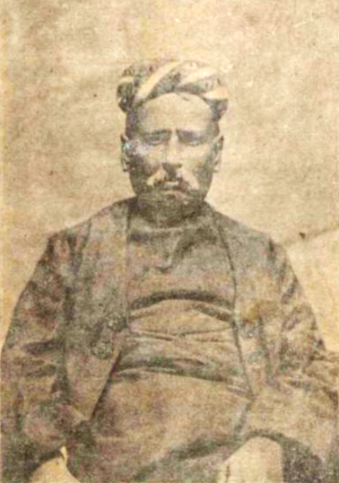
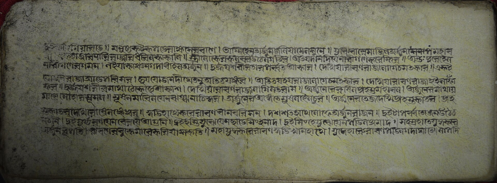
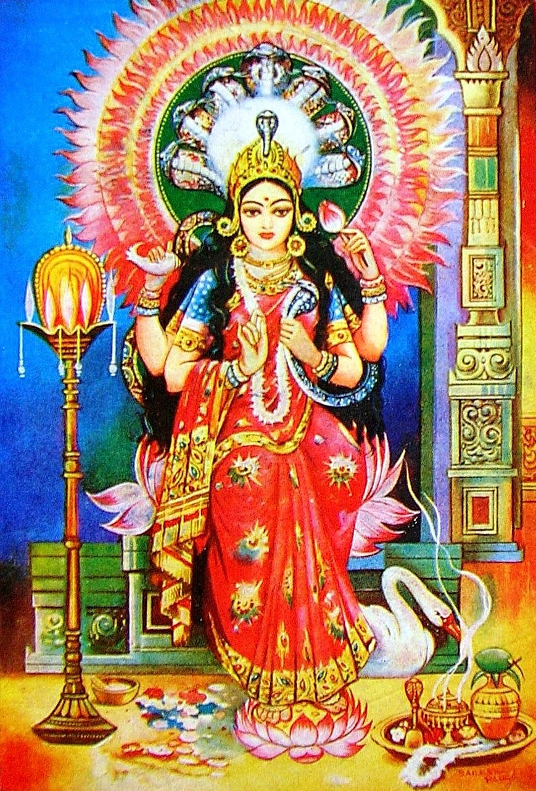

A World Without Print
It is easy to write the history of media as a history of machines: presses, type, paper mills, radio transmitters, television towers. But for most of Bengal's recorded past, none of that existed, and information still moved. It moved slowly, and it moved through channels that concentrated power in the hands of a small class of people who could read, write, and afford to commission a text, but it moved. Understanding what came before print is not a throat-clearing exercise before the real story starts. It explains why print, when it finally arrived, mattered so much, and it explains the shape of the audience that early Bengali newspapers would spend the next century trying to reach.
Two systems ran side by side in pre-print Bengal. The first was a manuscript culture built around Sanskrit and Bengali texts, copied by hand, stored in the libraries of temples, courts, and wealthy households, and read aloud in study circles rather than privately. The second was a much larger oral culture: religious teaching, epic recitation, topical song, and village gossip, none of which required literacy at all. Print would eventually absorb and transform both systems. But it took a very long time to get there, and the reasons why are worth taking seriously.
It is worth being specific about what counted as news in this world, because the category looked very different from what a nineteenth century newspaper reader would recognize. News of a king's death, a flood, a famine, or a distant war traveled through a chain of merchants, pilgrims, soldiers, and officials, each retelling and probably reshaping it along the way. There was no expectation of a single authoritative account arriving on a fixed schedule. Information arrived when it arrived, filtered through however many people had carried it, and its reliability depended entirely on how much a listener trusted the specific person telling them. That is about as far from the front page of a dated, mass produced newspaper as it is possible to get, and it is the baseline this entire history has to be measured against.
The Charyapada and the First Bengali Words

Mahamahopadhyay Haraprasad Shastri, who found the Charyapada in the Nepal Royal Court Library and brought Bengal's oldest surviving text to scholarly attention.
The oldest surviving specimen of anything resembling Bengali literature is a manuscript that was not even found in Bengal. In 1907, the scholar Haraprasad Shastri was cataloguing texts in the Nepal Royal Court Library when he came across a palm leaf manuscript containing forty seven verses, or padas, along with a Sanskrit commentary. These verses, known collectively as the Charyapada, are Vajrayana Buddhist mystical songs composed somewhere between the eighth and twelfth centuries, written in a language linguists now treat as the shared ancestor of Bengali, Assamese, and Odia.
Songs of realization, meant to be sung rather than read silently. Each verse specifies the raga and the tal it should be performed in, a reminder that even Bengal's earliest surviving text was built for a voice, not a page.On the Charyapada's form
This detail matters more than it might first appear. The Charyapada was not composed as something to be privately read by a solitary reader turning pages, because that kind of reading culture barely existed yet. It was composed as performance, meant to be carried by voice and instrument, using the manuscript primarily as a way to fix the words so a teacher could pass them to a student with some fidelity across generations. Manuscript and voice worked together from the very beginning of Bengali textual history, not in opposition to each other, and that partnership would define Bengali culture for the next thousand years.
Scribes, Palm Leaf, and the Business of Copying
Producing a manuscript in pre-print Bengal was slow, skilled, physical labor. Scribes, sometimes called lipikar, worked with a stylus on treated palm leaf, incising letters into the leaf's surface before rubbing soot or ink into the grooves to make the text legible. Paper gradually became more available from the fourteenth century onward, arriving through trade networks that connected Bengal to Persian and Central Asian paper-making traditions, but palm leaf remained in wide use for religious and literary texts for centuries afterward because it was cheap, locally available, and durable in a way that early handmade paper often was not.

A page from a hand copied puthi of the Ramayana's Uttara Kanda, from the Trilochan Maji collection. Each copy like this one was produced by a scribe working by hand, one leaf at a time.
A finished manuscript represented a genuine investment. It required a scribe's time, materials, and a patron willing to pay for the work, whether that patron was a temple, a royal court, or a wealthy merchant family building a private library. This meant that texts multiplied slowly and unevenly. A popular religious text might exist in dozens or even hundreds of hand copied versions circulating across Bengal, each one subtly different because every act of copying introduced small variations, deliberate or accidental. There was no fixed, authoritative edition of anything in the way a printed book creates. Every manuscript was, in a real sense, its own unique object.
This scribal economy also shaped who had access to texts at all. Literacy in Sanskrit was concentrated among Brahmin scholars and their students. Literacy in Bengali reached somewhat further, into merchant families and some segments of the rural gentry, but it was still far from universal. A newspaper industry, when it eventually arrived, would inherit this same basic problem: a printed page is only as useful as the number of people who can read it, and that number in Bengal grew slowly across the entire nineteenth century.
Manuscripts also carried meaning beyond their text. Illustrated manuscripts, particularly those associated with religious worship, were often treated as objects of devotion in their own right, decorated with painted borders and figures, handled with the same care given to an image of a deity. A damaged or incomplete manuscript could be ritually retired rather than simply discarded. None of this is how a society treats a disposable, mass produced object, and it is worth remembering when a printed newspaper eventually arrives claiming to be disposable by design, meant to be read once and thrown away. That shift in how a text was supposed to be treated was itself a genuine cultural change, not just a technological one.
The Mangal-Kavya Tradition

The snake goddess Manasa, whose worship the Manasa Mangal was composed to popularize, one of the best known cycles in the Mangal-Kavya tradition.
By the fifteenth century, a distinctive genre of long narrative poetry had taken hold across Bengal: the Mangal-Kavya, composed to popularize the worship of deities such as Manasa, the snake goddess, and Chandi, a form of the goddess Durga associated with hunters, traders, and the forest. These poems told sprawling stories of merchants, kings, and ordinary people whose fortunes turned on their devotion to a particular deity, and they were composed in a register of Bengali accessible to a much wider audience than Sanskrit courtly literature had ever been.
What makes the Mangal-Kavya tradition relevant to a history of media is how it actually reached people. These poems were manuscripts, yes, copied and recopied by scribes across generations. But their primary life was as performance. Professional and semi-professional reciters, sometimes accompanied by musicians, would perform Mangal-Kavya narratives at religious festivals, village gatherings, and private functions, often stretching a single story across multiple nights. The manuscript functioned as a script and a memory aid for the performer more than as a text meant for private silent reading by a general audience.
This performance culture meant that Bengali narrative literature achieved genuinely wide social reach centuries before printing existed, just not through anything a modern reader would recognize as publishing. A illiterate agricultural laborer in a Bengal village could know the Manasa Mangal or the Chandi Mangal in intimate detail, verse by verse, without ever having touched a manuscript, because the performance tradition did the work that mass literacy and mass printing would later do elsewhere.
Manuscript or Performance: Two Ways a Text Traveled
Pick a text from this chapter and follow the two separate paths it took to reach an audience, one written, one spoken.
Nabadwip: The Oxford of Bengal
If any single place represented the peak of Bengal's pre-print manuscript culture, it was Nabadwip, a city on the Bhagirathi river in what is now the Indian state of West Bengal. Under the patronage of King Lakshmana Sena of the Sena dynasty, who ruled from around 1178 to 1206, Nabadwip developed into one of the subcontinent's most important centers of Sanskrit learning, drawing students from across the Bengal region and beyond.
The city's educational system was organized around institutions called tols, small schools run by individual scholars who taught subjects like Smriti, the body of remembered legal and social tradition, and Nyaya, a demanding tradition of Indian logic and epistemology. Basudev Sarbabhouma founded what became known as the Nabadwip school of philosophy, and other scholars built their own schools around specialties like Tantric ritual and further branches of Smriti law. By some later accounts, at the height of this period Nabadwip supported roughly four thousand students taught by six hundred professors, an extraordinary concentration of scholarly activity that earned the city its lasting nickname, the Oxford of Bengal.
All of this happened entirely within a manuscript economy. Every text a Nabadwip student studied had been hand copied, and mastery meant memorization and oral debate as much as it meant reading. Nabadwip proves that a sophisticated, large scale intellectual culture could exist in Bengal without print, built instead on teacher to student transmission, rigorous oral examination, and a manuscript library system that, while limited in the number of copies it could produce, was more than sufficient to sustain centuries of serious scholarship.
Nabadwip by the Numbers
Scroll this into view to watch the count. All figures describe a scholarly community built without a single printed page.
Kirtan, Kobigan, and the Voice in the Marketplace
Nabadwip was also, in the early sixteenth century, the birthplace of a movement that would push Bengali oral culture even further into everyday public life: the Vaishnava bhakti tradition associated with Chaitanya Mahaprabhu. Chaitanya's devotional movement centered on kirtan, ecstatic congregational singing of devotional songs, performed not in private study circles but in public processions through streets and marketplaces. Kirtan required no literacy at all to participate in. It was designed for mass, immediate, emotional participation, and it spread the Vaishnava devotional message across social classes far more effectively than any manuscript could have on its own.
Alongside kirtan, Bengal developed a tradition of kobigan, competitive sung poetry contests where two performers would improvise verses back and forth on a topic, often religious or social, in front of an audience that judged the exchange in real time. Village storytellers, meanwhile, carried news, folk tales, and moral instruction from place to place in a role that combined entertainer, teacher, and, in a loose sense, journalist. Long before anything called a newspaper existed, these performers were Bengal's actual news distribution network for the vast majority of the population who could not read.
This oral network did not vanish when print arrived. It ran in parallel with the newspaper industry for most of the nineteenth and twentieth centuries, and in many rural areas it remained the dominant way ordinary people actually received news and stories well into the twentieth century, print circulation numbers notwithstanding. Any serious history of media in this region has to account for the fact that the printed press, for most of its existence, was reaching a minority of the population directly, and reaching everyone else indirectly, through people who read the news aloud, retold it, or folded it into older performance traditions.
This is also why the phrase reading a newspaper undersells how newspapers actually circulated in Bengal for a very long time. A single copy of a paper might pass through a dozen hands in a village tea stall, read aloud by the one literate person present to a room of listeners who would then carry that news onward by exactly the same oral mechanisms that had carried the Mangal-Kavya and the kirtan for centuries before. Print did not replace the old system so much as plug into it, becoming one more source that the oral network could draw on and redistribute. That hybrid arrangement, half print and half performance, is a thread that runs through nearly every chapter that follows.
Four Windows into Pre-Print Bengal
The Charyapada
Click to revealBengal's oldest surviving text: 47 Buddhist mystic verses, found not in Bengal but in a Nepal court library in 1907.
Mangal-Kavya
Click to revealLong narrative poems honoring deities like Manasa and Chandi, spread mainly through multi-night public performance, not private reading.
Nabadwip's Tols
Click to revealSmall schools teaching Nyaya logic and Smriti law, entirely by manuscript and oral debate, earning Nabadwip the name Oxford of Bengal.
Kirtan & Kobigan
Click to revealCongregational devotional singing and improvised sung poetry contests: Bengal's real news network for anyone who could not read.
Print Arrives Elsewhere First
While Bengal's manuscript and oral culture were reaching their fullest expression, printing technology was already old news elsewhere in the world. The interactive timeline below places Bengal's pre-print milestones alongside the same centuries elsewhere on the globe, and the gap is striking. Movable type existed in China roughly four centuries before Gutenberg's press appeared in Germany. A printing press was operating in Goa, on India's own west coast, by 1556, more than two hundred years before anything comparable existed in Bengal. Use the filters below to compare the two tracks.
Bengal and the World: A Comparative Timeline
Manuscript and oral culture milestones in Bengal, set against print history elsewhere. Filter to isolate either track.
The most telling entry on that timeline is Goa in 1556. Portuguese Jesuit missionaries, led by a Spanish Jesuit printer named Juan de Bustamante, set up a press at the College of St. Paul specifically to produce religious texts in local languages, after a printing press originally bound for Ethiopia ended up staying in India instead. Between 1556 and 1670, Goa's press produced only twenty to thirty known titles, a modest output by later standards, but it proved that a printing operation could function on the subcontinent. That proof of concept sat unused by Bengal for well over two centuries.
Where This Chapter Happened
Three real places named in this chapter: Nabadwip, the seat of Bengal's manuscript scholarship; Kathmandu, where the Charyapada was found in a royal court library in 1907, centuries after it was written; and Goa, where a press had already been running for over two hundred years while Bengal still had none. Pan and zoom, or click a marker.
Further west, the pattern was different again. The Ottoman Empire, despite ruling over vast Arabic and Turkish speaking populations, resisted printing in Arabic script for religious and guild related reasons for a very long time. It took until 1727 for Ibrahim Muteferrika to receive permission to establish the first Ottoman Turkish language press using movable Arabic type, nearly three centuries after Gutenberg. Bengal's delay was not unique in the history of print. It reflects a much broader pattern in which the spread of printing technology depended less on whether a society had sophisticated textual and scholarly traditions, which Bengal certainly did, and much more on specific chains of trade, religious mission, and political interest that happened to run through some places and not others.
There is also a purely technical obstacle worth naming directly: script. Gutenberg's movable type worked efficiently for the Latin alphabet, which has a manageably small number of letterforms. Bengali, like most South Asian scripts, uses a much larger set of characters once conjunct consonants, vowel signs, and other combined forms are counted, which made designing a workable set of movable type a genuinely harder engineering problem. It was not until 1778 that Charles Wilkins, working with the East India Company, successfully designed the first usable movable Bengali type, cutting the punches himself with the help of a local craftsman named Panchanan Karmakar. That type was first used to print Nathaniel Halhed's grammar of the Bengali language, a technical milestone that receives its own full treatment in the next chapter, but it is worth flagging here as the final piece that had to fall into place before any of what follows could happen.
Why Bengal Waited
Put together, the evidence points to a fairly clear explanation for why Bengal did not develop its own printing press until the late eighteenth century, more than two hundred years after Goa and well over three hundred years after Gutenberg. It was not a lack of textual sophistication. Nabadwip's tol system and centuries of Sanskrit and Bengali literary production show a region entirely capable of producing, storing, and transmitting complex texts at scale. It was not a lack of an audience either, since the reach of kirtan, kobigan, and the Mangal-Kavya performance tradition demonstrates that Bengali culture already knew how to move information and story to enormous numbers of people.
What Bengal lacked, until European trading companies established a serious commercial and administrative presence on the Hooghly river, was the specific combination of factors that had brought printing to Goa and, eventually, would bring it to Calcutta: a foreign power with both the technology and a concrete institutional reason to import it, whether that reason was religious conversion, as in Goa, or commercial and administrative record keeping, as it would eventually be in Calcutta. Printing technology, unlike manuscript copying or oral performance, arrived in South Asia as an import, carried by outsiders for their own purposes, and it took root first wherever those outsiders happened to establish themselves most firmly.
That combination would not arrive in Bengal until the second half of the eighteenth century, when the East India Company's growing power over Bengal, Bihar, and Orissa created exactly the kind of institutional demand for printed regulations, forms, and commercial notices that had never quite materialized before. The next chapter picks up that story directly: how trade and empire, not any change in Bengali culture itself, finally pulled a printing press onto the banks of the Hooghly, and set in motion everything that follows in this history.
It is worth resisting a tempting but misleading narrative here, the idea that Bengal was somehow behind and print dragged it into modernity. The manuscript and oral systems described in this chapter were not primitive placeholders waiting to be replaced. They were mature, load bearing institutions that had organized Bengali religious, intellectual, and cultural life for the better part of a millennium, and they did not simply disappear once printing arrived. Kirtan is still sung today. Mangal-Kavya narratives are still studied and performed. Nabadwip remains an active center of traditional Sanskrit learning. What changed with the arrival of print was not that an old, inadequate system gave way to a new, superior one, but that a third system, built around commercial and colonial priorities that had nothing to do with Bengali religious or literary tradition, was layered on top of the other two, and slowly, unevenly, over the better part of two centuries, became the dominant way news specifically, as opposed to religion, literature, or entertainment, moved through Bengali society. That is the story the rest of this history tells.